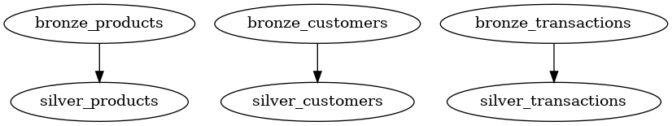

Introduction¶
A blueprint is a Python function decorator to declaratively design a table/entity. It is inspired by dbt and SQLMesh "models". However, instead of writing in SQL with jinja-like templates, you write in pure Python - there's no "compilation" step.
When a function is decorated with the Blueprint.register decorator, it is automatically registered in a JobRegistry which is used for creating the Directed Acyclic Graph (DAG) for running the blueprints in right order, and with highest possible concurrency.
Simple example¶
A simple example is a "source" blueprint. It has no dependencies and can thus be executed as the first blueprint in the DAG. The example just returns a dataframe, however, it could be any source, e.g. reading from external storage, a REST API or a database, however it must return a dataframe.
from blueno import blueprint, Blueprint, DataFrameType
@Blueprint.register()
def bronze_products() -> DataFrameType:
df = pl.DataFrame(
{
"a": [1, 2, 3],
"b": ["foo", "bar", "baz"],
}
)
return df
The blueprint decorator has many inputs. You can see a full list of inputs at the Blueprint API Reference.
One parameter is table_uri which defines where to store this dataframe as a delta table. If not specified, the blueprint will not be stored in a table, however it will still be available as an ephemeral dataframe (much like a temporary table) for downstream blueprints.
The blueprint can now be run with the command.
blueno run --project-path path/to/blueprints
Another example¶
The above example is very barebones, and does not utilize the full potential of blueprints. Let's create a more advanced example - a derived table of the bronze_product blueprint presented above.
The product blueprint now has proper columns; product_id and product_name. We'll also introduct a customer blueprint, and a sales blueprint for our sources.
In addition, the blueprint decorator is now supplied with the table_uri parameter, so that they are stored in delta tables when run.
from blueno import Blueprint, DataFrameType
@Blueprint.register(
table_uri="lakehouse/bronze/products",
format="delta",
)
def bronze_products() -> DataFrameType:
df = pl.DataFrame(
{
"product_id": [1, 2, 3],
"product_name": ["ball", "bat", "tent"],
"price": [4.99, 9.99, 29.99]
}
)
return df
@Blueprint.register(
table_uri="lakehouse/bronze/customers",
format="delta",
)
def bronze_customers() -> DataFrameType:
df = pl.DataFrame(
{
"customer_id": ["CUST01", "CUST02", "CUST03"],
"customer_name": ["Mary", "Bob", "Alice"],
}
)
return df
@Blueprint.register(
table_uri="lakehouse/bronze/sales",
format="delta",
)
def bronze_sales() -> DataFrameType:
df = pl.DataFrame(
{
"customer_id": ["CUST01", "CUST02", "CUST03"],
"product_id": [3, 2, 1],
"transaction_date": ["2025-01-01", "2025-01-02", "2025-01-03"],
"quantity": [2, 1, 1],
}
)
return df
If we now run the command with the --show-dag flag.
blueno run path/to/blueprints --show-dag
We can see the three blueprints. However, since there are no dependencies, the DAG is quite uninteresting.

So lets add some silver blueprints. The silver layer is usually cleansed data. In this example, we ensure there are no duplicates in the products table and in the customers table.
In addition, transactions with a quantity of zero are removed.
from blueno import Blueprint
from blueno.types import DataFrameType
@Blueprint.register(
table_uri="lakehouse/silver/products",
format="delta",
primary_keys=["product_id"],
)
def silver_products(self: Blueprint, bronze_products: DataFrameType) -> DataFrameType:
df = bronze_products.unique(subset=self.primary_keys)
return df
@Blueprint.register(
table_uri="lakehouse/silver/customers",
format="delta",
primary_keys=["customer_id"],
)
def silver_customers(self: Blueprint, bronze_customers: DataFrameType) -> DataFrameType:
df = bronze_customers.unique(subset=self.primary_keys)
return df
@Blueprint.register(
table_uri="lakehouse/silver/transactions",
format="delta",
primary_keys=["product_id"],
)
def silver_transactions(bronze_transactions: DataFrameType) -> DataFrameType:
df = bronze_transactions.filter(pl.col("quantity") > 0)
return df
Let's look at the DAG:

As expected, we can see the that the bronze tables are upstream dependencies of the silver tables. How is this achieved?
It is achieved by adding a parameter to the function signature of the blueprint. For example, we added the bronze_transactions: DataFrameType to the silver_transactions function signature. This parameter name bronze_transactions exactly matches the function name of the bronze_transactions blueprint. Then we can automatically infer this dependency.
In the silver_products and silver_customers blueprints you can also see the parameter self: Blueprint. This can optionally be added if you need to access to some of the blueprints parameters, i.e. table_uri or primary_keys. In this example, we need to know our primary keys to deduplicate.
Lastly, we will add the metrics table in the gold layer, which combines the three silver tables:
from blueno import Blueprint
from blueno.types import DataFrameType
@Blueprint.register(
table_uri="lakehouse/gold/sales_metrics",
format="delta",
write_mode="incremental",
incremental_column="transaction_date",
)
def gold_sales_metrics(
silver_transactions: DataFrameType,
silver_customers: DataFrameType,
silver_products: DataFrameType
) -> DataFrameType:
df = (
silver_transactions
.join(silver_customers, on="customer_id", how="inner")
.join(silver_products, on="product_id", how="inner")
.group_by(
"transaction_date",
"customer_id",
"product_id",
)
.agg(
pl.sum("quantity").alias("total_quantity"),
(pl.col("quantity") * pl.col("price")).sum().alias("total_sales"),
)
)
return df
All three silver blueprints are added as dependencies and are inner joined to ensure we only show sales metrics for valid products and valid customers. In addition, the total sales metric is calculated by multiplying the quantity and price.
In the blueprint decorator some new parameters were introduced. Namely write_mode and incremental_column. The write_mode determines how the resulting dataframe is written to the destination. The incremental write mode filters the dataframe on the incremental_column by the max value of the incremental_column in the target table. After it is filtered, the resulting dataframe is appended to the target table.
If not supplied, the write_mode defaults to overwrite.
You can see a complete list of supported write modes in the Blueprint API Reference.
Now we can run the blueprints again, however this time I supply the command with --select. This ensures we only run the gold_sales_metrics blueprint, because I know we already ran its upstream dependencies, so there is no need to re-run them.
blueno run --project-path path/to/blueprints
--select gold_sales_metrics \
--display-mode log \
--log-level INFO \
--show-dag
Tip
You can for example also use --select +gold_sales_metrics (prefixed and/or suffixed by one or more +'s).
The number of +'s will denote the number of levels of upstream and downstream dependencies to also run.
I.e. +gold_sales_metrics will select the gold_sales_metrics job and its direct upstream dependencies (parents). ++silver_product will select the silver_product job and two generations of upstream dependencies (parents + grandparents).
You can also be more specific such as --select bronze_products+ silver_customers. This will run bronze_products and its direct downstream depencies (silver_products); and silver_customers
Note
You need graphvizinstalled to show the DAG. If you do not have it installed, you can exclude the --show-dag option.
We can see in the console output, that only the gold_sales_metrics was run.
2025-05-18 18:10:51 - blueno - INFO - Starting blueprint execution 1 tasks at a time
2025-05-18 18:10:51 - blueno - INFO - Running: gold_sales_metrics
2025-05-18 18:10:51 - blueno - INFO - Finished: gold_sales_metrics
The resulting DAG is:

And we can see the resulting sales metrics table by printing to console.
import polars as pl
df = pl.read_delta("lakehouse/gold/sales_metrics")
print(df)
| transaction_date | customer_id | product_id | total_quantity | total_sales |
|---|---|---|---|---|
| str | str | i64 | i64 | f64 |
| 2025-01-03 | CUST03 | 1 | 1 | 4.99 |
| 2025-01-02 | CUST02 | 2 | 1 | 9.99 |
| 2025-01-01 | CUST01 | 3 | 2 | 59.98 |
Extending the Blueprint class¶
Sometimes, the built-in write methods or post-processing steps in Blueprint might not be enough for your needs. In these cases, you can create your own class that inherits from Blueprint and override specific methods or properties.
For example, lets say you want to:
- Add a post-processing step that extracts the date from a timestamp column.
- Add a custom write method that overwrites only specific partitions in your table.
To do this, youll need to override the following properties or methods:
_extend_post_transformsto add your custom post-processing._extend_write_modesto add your custom write method.- Optionally,
_extend_input_validationsto add extra input checks.
Add a custom post transformation¶
First, create a new class that inherits from Blueprint. Add a method to extract the date from a timestamp column, and register it in _extend_post_transforms:
from blueno import Blueprint
from dataclasses import dataclass
import polars as pl
from typing import Optional, Dict, Callable
@dataclass(kw_only=True)
class CustomBlueprint(Blueprint):
date_partition_column: Optional[str] = None
def _add_date_partition(self) -> pl.DataFrame:
self._dataframe = self._dataframe.with_columns(
pl.col(self.date_partition_column).dt.date().alias("date"),
)
@property
def _extend_post_transforms(self) -> Dict[str, Callable]:
return {
"add_date_partition": self._add_date_partition
}
Use your custom blueprint¶
Now you can use your new class and specify the custom post-transform:
from datetime import datetime, timezone
@CustomBlueprint.register(
table_uri="/tmp/my_deltatable",
format="delta",
date_partition_column="ts",
post_transforms=["add_date_partition"]
)
def my_transformation():
df = pl.DataFrame({
"a": [1],
"ts": [datetime.now(timezone.utc)]
})
return df
Add custom input validation (optional, but recommended)¶
To make sure users dont forget to set date_partition_column when using your post-transform, you can add a validation rule:
from typing import List, Tuple
@dataclass(kw_only=True)
class CustomBlueprint(Blueprint):
# ...existing code...
@property
def _extend_input_validations(self) -> List[Tuple[bool, str]]:
return [
(
"add_date_partition" in self._post_transforms and not isinstance(self.date_partition_column, str),
"date_partition_column must be provided when add_date_partition post_transform is set"
)
]
Add a custom write mode¶
You can also add a write method that only overwrites the partitions present in your dataframe:
from deltalake import write_deltalake
@dataclass(kw_only=True)
class CustomBlueprint(Blueprint):
# ...existing code...
def _write_mode_overwrite_partition(self) -> None:
partitions = self._dataframe.select("date").unique().to_dict(as_series=False).get("date", [])
partitions_str = [partition.strftime("%Y-%m-%d") for partition in partitions]
partition_predicate = f"""date in ('{"','".join(partitions_str)}')""" if partitions_str else None
write_deltalake(
table_or_uri=self.table_uri,
data=self._dataframe.to_arrow(),
mode="overwrite",
predicate=partition_predicate,
)
@property
def _extend_write_modes(self) -> Dict[str, Callable]:
return {
"overwrite_partition": self._write_mode_overwrite_partition
}
For a complete, working example, see: test_custom_blueprint